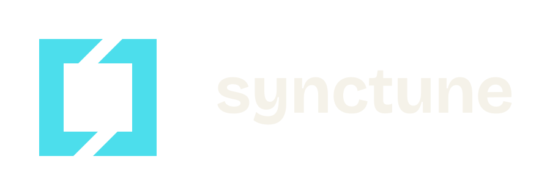
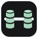
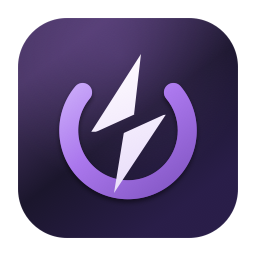
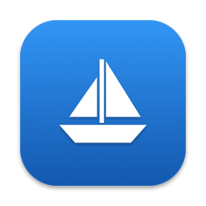
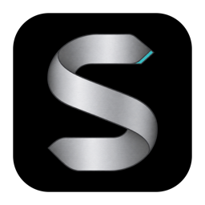

SendBox
Run coding agents in dedicated Linux VMs under a YAML policy, using Apple Containerization on macOS and Kata Containers on Linux.

Synctune / Open / Developer tools
For the local machine, the self-hosted app and the homelab. We build tools that help you run, inspect and control your own systems.
Start here / Public source
One local control plane for native apps, containers, Compose stacks, local Kubernetes and Linux VMs, on macOS, Linux and Windows. An open-source alternative to proprietary container tooling.
The rest of the toolbox
Find the source for public projects, or see what is still in development.
Run coding agents in dedicated Linux VMs under a YAML policy, using Apple Containerization on macOS and Kata Containers on Linux.
Shared governance for SendBox teams: signed policy profiles, credential grants and a central audit log.
Explore SendBox Fleet
SQLite for local and self-hosted apps, with a manager, gRPC API and web interface.
Explore SQL not-so-liteAn etcd v3-compatible store backed by SQLite, exploring a non-Raft clustered mode.
Explore etcqliteTurn Macs and Windows PCs into GitHub Actions self-hosted runners for private repositories, with ephemeral VMs through Porto, Windows and WSL2 services, or Actions Runner Controller on Kubernetes.
Source is not public.

A low-footprint resource monitor for macOS and the agentic development workflow.
Explore KillSwitch
A small macOS menu bar app that watches releases, Actions runs, issues and pull requests in the GitHub repositories you pick.
Explore Shipwatch
A Chromium browser with Google's built-in services removed. Unsigned previews are available for Apple silicon Macs.
Compress, convert, crop and resize images in your browser, without an upload service in the middle.
A practical set of PDF manipulation tools that keeps your files away from third-party uploads.
Explore PDFToolsEdit LaTeX with a real-time preview. Self-host it without a hosted service's compilation limits.
Explore LaTeX EditorAn Eisenhower matrix for working out what matters, what is urgent and what can wait.
Public source is not a promise of a finished release. Some projects still live in Matteo's GitHub namespace while organization transfers are pending.
Our approach
We build for local development and self-hosting first. A good tool is one you can understand, run yourself and change when you need to.
About Synctune